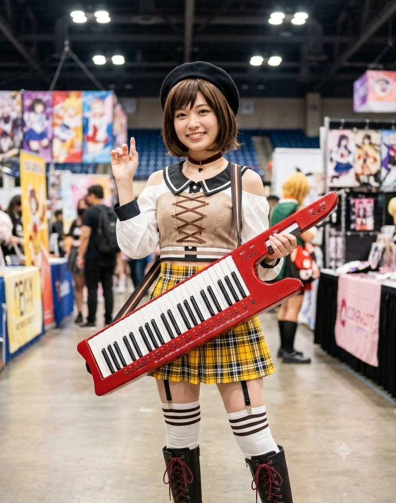

1. 개요
"으, 응! 나 오늘도 열심히 『츠구(규미)하고 있어(ツグってるよ)』! 다들 망설이지 말고 우리 다 같이 도전해 보자! 시작은 언제나 작은 한 걸음부터니까♪"
"에헤헤... 내가 우리 다섯 명 중에서 제일 평범하니까 연애나 결혼은 제일 늦을 줄 알았다고? 그, 그치만 민우 씨가 카페 마감 때마다 설거지 도와주면서 프러포즈하는 바람에... 어어?! 모카 쨩, 주란 쨩! 왜 날 보면서 '할 건 뒤에서 제일 먼저 다 해치운 무서운 다람쥐'라고 부르는 거야아아~?!"
효빈광역시 청엽구의 최고 신흥 부촌이자 교육·유통의 중심지인 우택동(羽沢洞)을 지배하는 성실함의 화신이자, 5인조 소꿉친구 록 밴드 『애프터글로우(Afterglow 효빈)』의 키보디스트 겸 모든 도전을 시작하게 만드는 행동력 대장. 현재 5호선 남우택역 카페거리의 성지인 『하규미 커피점(하자와 카페)』의 제2대 대표 마스터이자, 코스트코 효빈점의 평생 명예 점장이다.[5]이름이 비슷해서 간혹 헬로, 해피 월드!의 '키타자와 하구미(北沢 はぐみ)'와 헷갈리는 외지인들이 있으나, 이 문서는 애프터글로우의 '하자와 츠구미(羽沢 つぐみ)' 본체인 하규미(河奎美) 문서다!
출생지이자 본거지인 청엽구 우택동(羽沢洞)의 한자 '우택(羽沢)'을 일본어로 읽으면 놀랍게도 《BanG Dream!》 Afterglow의 키보디스트 하자와 츠구미(羽沢 つぐみ)의 성씨인 '하자와(羽沢)'와 100% 일치한다! 또한 그녀가 빠른 1993년생으로 태어난 생일인 1월 7일은 우택동 심장부에 위치한 『코스트코(Costco) 효빈점』의 실제 개점일(2003년 1월 7일)과 정확히 똑같다.
어릴 적 사과머리에서 중학교 때부터 유지해 온 단정한 갈색 C컬 단발머리와 선한 갈색 눈동자, 볼에 도토리를 물고 있는 듯한 귀여운 '아기 다람쥐' 비주얼, 그리고 천모카가 유행시킨 "츠구테루(ツグってる: 규미처럼 엄청나게 성실하고 열심히 함)!"라는 신조어의 주인공이다. 본인은 늘 자신을 "특징 없고 평범한 아이"라고 겸손해하지만, 실제로는 전교 학생회장에 전교 상위권 성적, 청엽구 최고 부촌 건물주(카페 오너), 그리고 소꿉친구 5인방 중 압도적 1호로 결혼과 출산(득남)까지 일사천리로 해치운 '세계관 최강의 은밀한 행동파 승리자'로 추앙받고 있다.
2. 생애 및 커리어 (우택동의 부지런한 다람쥐, 가장 먼저 모든 것을 성취하다!)
2.1. 청엽구 우택(羽沢)동의 모범생 소녀와 『하규미 커피점』
1993년 1월 7일, 효빈직할시 청엽구 우택동에서 로스터리 찻집 『하자와(하규미) 커피점』을 운영하는 아버지 하길택 마스터와 제과명장 어머니 김미숙 여사의 외동딸로 태어났다. 1월 7일 빠른 생일로 태어난 덕분에, 1년 먼저 태어난 1992년생 소꿉친구들(문주란, 천모카, 태미연, 허마리)과 초등학교 입학 때부터 같은 학년(동급생)으로 자란 애프터글로우의 공식 막내다.
원래 규미가 어릴 때만 해도 우택동은 우택저수지(현 우택호수공원)를 끼고 있는 조용하고 평범한 농촌 외곽 동네였다. 그러나 신도시 개발과 함께 우택호수공원, 청엽국제학교, 코스트코 효빈점, 그리고 4호선 우택역과 5호선 남우택역(추후 창전선 환승 예정)이 잇달아 들어서면서 우택동이 청엽구 최고의 신흥 부촌으로 떡상했고, 부모님이 남우택역 2번 출구 앞에서 운영하시던 『하규미 커피점』 또한 우택동 카페거리의 상징적인 랜드마크 빌딩으로 거듭났다!(본인은 평범하다고 주장하지만 동네와 집안 스펙부터가 이미 평범함과는 거리가 먼 기만자다.) 6살 때부터 피아노를 배워 밴드 결성 시점에 이미 피아노 7년, 키보드 3년의 탄탄한 경력을 쌓았고, 방과 후에는 매일 부모님 가게에서 앞치마를 두르고 서빙과 베이킹을 돕는 효녀이자 상점가의 미소천사로 사랑받았다.
2.2. 압도적인 추진력으로 탄생시킨 『애프터글로우』와 전교 학생회장·우등생 스펙
하규미의 진정한 무서움은 다정한 미소 뒤에 숨겨진 '타의 추종을 불허하는 추진력과 실행력'이다. 중학교 2학년 때 문주란 혼자 다른 반으로 떨어져 외로워할 때 "방과 후에도 매일 함께 있을 수 있게 우리 다 같이 밴드를 만들자!"라고 가장 먼저 제안해 『애프터글로우』를 탄생시킨 장본인이 바로 규미다(『석양, 선명해지고』 고증). 또한 걸즈 밴드 잼 출전을 망설이는 멤버들의 등을 밀어 참가시키고, 1장 마지막에 "우리의 다음 목표는 무도관(대공연장)으로 잡자!"라고 선언한 것도, 한밤중 폐교에 숙제를 찾으러 갔을 때 귀신을 무서워하는 문주란과 태미연을 대신해 손전등을 들고 선두에 선 것도 전부 하규미였다.
[과로로 쓰러질지언정 성적은 전교 최상위권! 학생회 서기→부회장→회장 엘리트 코스]
더욱 놀라운 사실은 그녀의 학업 성적과 이력이다. 우택초등학교와 우택중학교를 최우등 성적으로 졸업한 뒤 진학한 효빈예술고등학교에서, 규미는 1학년 때 학생회 서기, 2학년 때 천재 선배(히카와 히나 포지션)를 보좌하는 학생회 부회장, 그리고 3학년 때는 마침내 전교 학생회장에 취임하는 엘리트 코스를 밟았다!
밴드 키보드 연습 + 부모님 카페 일손 돕기 + 상점가 청년회 축제위원 + 살인적인 학생회 업무까지 1인 4역을 뛰느라 1장 당시 한 차례 과로로 쓰러져 입원한 적은 있을지언정, 학교 내신과 수능 성적만큼은 단 한 번도 전교 상위권을 놓치지 않은 갓생 우등생이었다! 덕분에 효빈대학교 경영학과와 실용음악과를 복수전공 장학생으로 졸업하며 카페 경영과 음악 실기를 동시에 마스터했다.[6]담당 성우인 카네모토 히사코 역시 2018년 5월부터 2019년 3월까지 약 9개월간 해외 어학연수(유학)를 떠나면서, 출국 전에 무려 반년 치가 넘는 뱅드림 인게임 이벤트와 2장 보이스를 전부 미리 다 녹음해 놓고 가는 초인적인 '츠구테루!' 성실함을 보여주어 성우와 캐릭터의 혼연일체를 증명한 바 있다!
2.3. 친구들 중 '1호 결혼 & 득남' 골인! "얌전한 다람쥐가 뒤에서 할 건 제일 먼저 다 한다?!"
그리고 하규미의 일생일대 최대 반전 드라마는 그녀가 20대 중반이던 2019년 봄에 터졌다!
당시 애프터글로우 멤버들과 주변 지인들은 모두 "우리 츠구(규미)는 워낙 순진하고 밴드랑 카페 일밖에 모르는 모범생이니까, 다섯 명 중에서 연애나 결혼은 제일 늦게 하겠지~"라고 굳게 믿고 있었다(심지어 연애에 관심 많은 허마리조차 아직 남친과 연애만 하던 시절이었다).
그런데 어느 봄날, 합주실에 들어온 하규미가 얼굴을 발그레 붉히며 가방에서 노란색 리본이 달린 청첩장 다발을 꺼내 멤버들에게 돌렸다!!
하규미: "저, 저기 얘들아...! 에헤헤, 놀라지 마... 나 다음 달에 민우 씨랑 결혼해! 그... 그리고 실은... 배 속에 아기(시우)도 생겼어...! 으, 응! 연애도 결혼도 열심히 츠구(규미)했어♪"
문주란 & 천모카 & 태미연 & 허마리: (청첩장과 초음파 사진을 번갈아 보며 단체로 뇌 정지가 와서 10초간 얼어붙은 뒤 합주실이 떠나가라 절규) "에에에에에에엣―?!?!?! 야 하규미이이!! 언제부터 사귄 거야?! 아니 속도위반(혼전임신)까지?! 얌전한 고양이가 부뚜막에 먼저 올라간다더니, 우리 중에서 제일 착실한 줄 알았던 다람쥐가 뒤에서 할 건 제일 먼저 다 하고 있었잖아아아!!"
알고 보니 규미의 남편이 된 정민우(1992년생, 현 우택동 대형 회계법인 파트너 공인회계사) 씨는 고등학교 시절부터 『하규미 커피점』 창가 자리에 매일 앉아 규미가 타주는 코코아와 마롱라떼를 마시며 공부하던 훈남 단골손님이었다! 대학 진학 후 규미가 특유의 직진 행동력('츠구테루!')을 발휘해 먼저 "저기... 시험 끝나시면 저랑 영화 보러 가실래요?"라고 고백해 비밀 연애를 이어왔고, 만 26세가 되던 2019년 소꿉친구 5인방 중 압도적 '결혼 1호 & 출산 1호(2020년 아들 정시우 득남)' 테이프를 끊어버린 것이다!(허마리는 규미의 결혼에 자극받아 2년 뒤인 2021년에 2호로 결혼했다.)
이 전설의 사건 이후 하규미는 효빈시 밴드 판에서 "평범함을 가장한 세계관 최강의 은밀한 실속파이자 진정한 어른(유부녀 큰선배)"으로 경외의 시선을 한 몸에 받고 있다.
3. 비주얼 및 캐릭터성 (평범함 속의 마성 & '츠구테루!' 행동력의 화신)
3.1. C컬 갈색 단발의 아기 다람쥐 비주얼과 156cm의 단아한 매력
빨간 브릿지의 문주란, 은발의 천모카, 홍발 장신 태미연, 핑크 거유 허마리 등 개성이 폭발하는 애프터글로우 멤버들 사이에서, 단정한 갈색 C컬 단발머리에 선한 갈색 눈동자를 지닌 하규미의 수수하고 깨끗한 외모는 오히려 독보적인 치유계 매력 포인트로 꼽힌다(실제로 시즌 3 이후 서브컬처계에서 수수하고 청순한 정통파 미소녀의 인기가 급상승하며 규미의 인기도 폭발했다!).[7]갈색 머리에 갈색 눈, 갈색 앞치마와 다람쥐 이미지 때문에 퍼스널 컬러를 갈색으로 착각하는 사람들이 많으나, 공식 이미지 컬러는 따뜻한 파스텔 옐로우(#FFEE88)다!
특히 갈색 니트나 앞치마를 입었을 때 동글동글하고 귀여운 인상이 영락없는 '아기 다람쥐(서양 팬덤 별명: 도토리 Acorn)'를 빼닮아, 남편 정민우 씨와 팬들로부터 '우택동 다람쥐 부인'이라 불린다. 또한 애니메이션 『It's MyGO!!!!!』 시점(시즌 3 이후)에 하자와 카페 카메오로 등장했을 때 눈동자 속에 또렷한 톱니바퀴 하이라이트가 살아있듯, 아기 엄마가 된 현재도 20대 초반 대학생으로 보일 만큼 최강의 동안 미모를 유지하고 있다.
3.2. 커피점 사장님인데 '블랙커피'는 못 마시는 갭 모에와 입욕제 컬렉터
우택동 카페거리를 대표하는 『하규미 커피점』의 제2대 마스터로서 핸드드립 커피 추출 기술은 달인의 경지에 올랐건만, 정작 본인의 미각은 어린이 입맛이라 쓴 '블랙커피(아메리카노)'를 전혀 마시지 못한다는 치명적인 갭 모에를 가지고 있다!
손님들에게는 1리터짜리 벤티 아메리카노(『츠구미의 헌신 커피』)를 기가 막히게 내려주면서, 정작 자기가 마실 때는 우유와 밤 페이스트, 휘핑크림을 듬뿍 넣은 달콤한 '마롱라떼(밤라떼)'나 따뜻한 '코코아', 그리고 세상에서 제일 좋아하는 '엄마가 만들어준 생크림 케이크'만 먹는다.
취미는 전 세계의 향기롭고 예쁜 '입욕제(배스 밤) 모으기'다. 카페 영업과 육아, 밴드 합주로 지친 날 밤이면 우택동 타운하우스 욕조에 따뜻한 물을 받고 자신이 수집한 꽃향기 입욕제를 풀어 반신욕을 하며 피로를 푸는데, 겨울만 되면 추위를 타는 문주란에게 몸이 따뜻해지는 입욕제를 나눠주곤 한다.
4. 우택동·코스트코 효빈점(1월 7일 개점) 유니버스와 정치 성향
4.1. 1월 7일의 기적: 『코스트코 효빈점』 평생 명예 점장과 '츠구테루 할인' 대란
청엽구 우택동(羽沢洞)의 심장부인 4호선 우택역 바로 옆에는 주말마다 주차 대기 행렬이 우택역 4번 출구까지 이어지는 유통 공룡 『코스트코(Costco) 효빈점』이 자리 잡고 있다.
그런데 이 코스트코 효빈점의 공식 개점일이 무려 2003년 1월 7일로, 하자와 츠구미(및 현실의 하규미!)의 생일인 1월 7일과 100% 일치한다! 이 기적 같은 우연 덕분에 코스트코 효빈점은 전국 뱅드리머들에게 '하자와 가문의 거대 식량 창고'로 추앙받으며, 본사 차원에서 우택동 토박이인 하규미를 '코스트코 효빈점 평생 명예 점장'으로 위촉했다!
코스트코 효빈점 매장 내부에는 규미의 밈이 곳곳에 녹아 있는데, 대용량 베이커리나 유통기한 임박 신선식품을 파격 할인가에 내놓을 때 가격표 옆에 [🔥오늘도 코스트코는 츠구테루(ツグってる: 미친 듯이 열심히 할인함)!🔥]라는 공식 POP 팻말을 붙여놓는다. 또한 푸드코트의 1,000원짜리 아메리카노 머신 앞에는 [가성비는 츠구미급! (단, 규미 점장님은 쓰다고 못 마십니다)]라는 안내문이 붙어 있어 손님들에게 웃음을 준다. 매년 1월 7일(하규미 생일 겸 코스트코 효빈점 개점기념일) 아침에는 하규미가 명예 점장 조끼를 입고 베이커리 코너에 등판해 1+1 수제 케이크 커팅식을 진행하는데, 오전 10시도 되기 전에 대형 케이크 1,000판이 완판되는 진풍경이 펼쳐진다.
4.2. 우택역·남우택역 카페거리의 지배자와 더불어민주당 지지
"우리 우택동이 농촌 당가면 시절을 넘어 호수공원과 코스트코, 국제학교를 품은 멋진 동네가 되고, 4호선 우택역과 5호선 남우택역에 이어 2027년 9월 개통될 창전선까지 들어오게 된 건 모두 박효빈 시장님과 신수인 의원님이 열심히 '츠구테루!' 해주신 덕분이에요♪"
하규미는 우택동 카페거리 상인회장 겸 더불어민주당(청엽구 갑 신수인 국회의원, 남예서 시의원, 유채아·고준서 구의원)의 핵심 후원 당원이다. 특히 2027년 9월 개통 예정인 하늘색 효빈 도시철도 창전선(#33AAFF)이 개통되면 『남우택(5호선 환승) - 우택중앙 - 우택(4호선 환승)』 구간이 연결되어 우택동 카페거리와 코스트코의 주말 교통 체증이 단숨에 해소될 예정이기에, 규미는 창전선 건설 현장 노동자들에게 매주 따뜻한 커피와 호박 파이를 무상으로 케이터링하며 응원하고 있다.
또한 우택동 바로 옆 동네인 동리동(東里洞)과 1호선 동리역 주민들이 '츠구미(개똥지빠귀)'의 한자 번안을 억지로 끌어와 "우리 동리동도 하규미 성지다!"라며 호소하자, 천사표인 규미는 이를 외면하지 않고 동리역 고객지원실에 직접 친필 방명록과 커피 머신을 기증해 동리동 주민들까지 감동시켰다.
4.3. 소속 정당
| 기간 | 정당명 | 비고 |
| 2015~현재 | 더불어민주당 | 청엽구 갑 우택동 소상공인·보육정책 자문위원장 |
5. 효빈시판 Afterglow 멤버들과의 관계 및 5대 일화
강숙미(카스미 쨩)와 오다혜(오타에 쨩)는 애칭으로, 연상 선배인 세타 카오루는 유일하게 성(세타 선배)으로 부르며, 나머지 모든 동갑·후배들에게는 다정하게 '-쨩', '-씨'를 붙여 존중해 주는 성인(聖人)이다.
5.1. 멤버별 상세 관계 (천모카·문주란·허마리·태미연)
- 천모카 (千モカ / 아오바 모카 포지션, 1992년생) - 내 별명 '츠구'와 유행어 '츠구테루!'를 만들어준 장난꾸러기 단짝:
규미를 "츠구~"라고 부르며, 규미가 무언가를 열심히 할 때마다 "오오~ 오늘도 츠구테루(ツグってる) 하네에~"라고 놀리는 장본인(통칭 모카츠구). 교실이나 카페 책상을 겨울마다 코타츠로 개조해 달라고 설문지에 적어내는 범인이지만, 규미가 과로로 쓰러졌을 때 누구보다 걱정하며 규미의 생일마다 웹툰 만화를 그려 선물하고, 규미 역시 모카의 생일마다 특대형 버스데이 케이크와 빵을 구워주는 절친이다.
- 문주란 (文珠蘭 / 미타케 란 포지션, 1992년생) - 내가 가장 동경하는 멋있는 보컬이자 꽃말을 나누는 힐링 파트너:
애프터글로우 내의 대표적인 내향형·안정형 콤비(통칭 츠구란 / 란츠구). 주란이가 화도(꽃꽂이)를 하는 것을 보고 규미도 카페 테이블에 놓을 꽃과 꽃말에 관심을 갖게 되었으며, 규미의 생일(1월 7일)마다 주란이가 규미의 탄생화인 '흰 튤립 부케'를 선물한다. 주란이가 모호한 감정을 말로 표현하지 못해 답답해할 때 규미가 엄마처럼 차분하게 정리해 주며, 주란이에게 있어 규미네 집(하규미 커피점)은 추운 겨울날 언제든 달려가 따뜻한 홍차를 마실 수 있는 최고의 안식처다.
- 허마리 (許마리 / 우에하라 히마리 포지션, 1992년생) & 태미연 (太美姸 / 우다가와 토모에 포지션, 1992년생) - 함께 육아 정보를 나누는 유부녀 동지 '마리'와 듬직한 '미연':
규미(2019년 결혼, 2020년 아들 시우 출산)와 허마리(2021년 결혼, 2023년 딸 하리 출산)는 애프터글로우 내 유이한 '유부녀 & 학부모 라인'이다! 마리가 규미네 가게의 가을 신메뉴(개량 마롱라떼와 몽블랑) 1호 시식 위원을 맡고 있으며, 규미의 아들 정시우(6세)가 마리의 딸 강하리(3세)를 친동생처럼 손을 잡고 돌봐주어 벌써부터 사돈(?) 맺자는 농담이 오가고 있다.
5.2. 하규미와 친구들의 주요 일화 (전설의 5대 사건)
- 일화 1: 『걸파☆피코 4화』 실사판 — 평범 탈출을 노린 '올빽 양아치 폭주족 락커' 대변신과 문주란의 "Ran ran away(빤스란)" 대참사! (feat. 애프터글로우 전원)
원작 애니메이션 『걸파☆피코』 4화에서 전 세계 팬들을 충격과 공포로 몰아넣었던 하자와 츠구미 최대의 흑역사가 현실의 효빈시에서도 토씨 하나 안 틀리고 벌어진 사건이다!
대학 시절 어느 날, "우리 밴드 애들은 다들 개성이 뚜렷한데 나 혼자만 너무 수수하고 평범한 모범생 이미지라 록 밴드에 안 어울리는 게 아닐까..."라고 심각하게 고민에 빠진 하규미는, 이미지 변신을 위해 파격적인 도전을 감행했다.
다음 날 합주실 문이 열리고 등장한 하규미의 모습은—그 단정하던 갈색 단발머리를 무스로 빳빳하게 세워 올린 거대한 '리젠트 올빽 머리(마에다 타이슨 / 키무라 나츠키 풍)'에, 검은 선글라스와 가죽 징 박힌 라이더 재킷을 걸치고 입에는 이쑤시개(막대사탕)를 문 채 "요오~ 맨! 오늘부터 불량 다람쥐 츠구 님이다, 록 앤 롤 베이비―!!"라고 외치는 충격과 공포의 양아치 폭주족 비주얼이었다!!
문주란(란): (규미의 충격적인 올빽 양아치 모습을 본 순간 동공이 지진을 일으키며 멘탈이 붕괴되어) "...하, 하아?! 이건 내가 아는 츠구미(규미)가 아니야!! 무리야아아!!" (비명을 지르며 합주실 밖으로 뒤도 안 돌아보고 빛의 속도로 도망침 — 전설의 해외 댓글 『Ran ran away (란이 빤스런 쳤다)』 탄생의 순간!)
태미연: (아무리 락 스피릿을 좋아해도 차마 눈뜨고 볼 수 없어 이마를 짚으며) "...어이 츠구야, 아무리 이미지 변신이라도 이건 좀 너무 나갔다..."
결국 그날 밤 파스파레의 라이브 영상을 보며 반성한 규미가 다음 합동 라이브 때 올빽 대신 샤랄라한 파스파레 아이돌 프릴 의상을 입고 등장하는 바람에(걸파☆피코 13화 고증), 문주란은 두 번 연속으로 심장마비를 겪을 뻔했다.
- 일화 2: 『6번째 Afterglow』 한밤중의 폐교 괴담 돌파기 — 겁쟁이 문주란·허마리를 지킨 아기 다람쥐의 무서운 담력! (feat. 전원)
여름방학 중, 덜렁이 리더 허마리가 학교 교실 사물함에 여름방학 숙제 노트를 두고 오는 바람에 애프터글로우 다섯 명이 불 꺼진 한밤중의 학교에 잠입했을 때의 일이다(『6번째 Afterglow』 고증).
평소 쎈 척하던 문주란(란)은 어두운 복도에 들어서자마자 귀신이 나올까 봐 사시나무 떨듯 떨며 한 발짝도 못 떼고, 허마리는 이미 울기 직전이며, 태미연조차 으스스한 분위기에 주춤거리고 있었다.
그때 가장 작고 평범해 보이던 하규미가 대형 손전등을 번쩍 켜 들고 "다들 내 뒤로 숨어! 내가 제일 앞에서 길 밝히고 갈게! 숙제 빨리 찾고 돌아가자, 츠구테루!"라며 용감무쌍하게 칠흑 같은 암흑 복도 맨 앞장서서 돌격했다! (비록 중간에 천모카의 귀신 장난에 한 번 놀라긴 했으나 끝까지 임무를 완수했다.)
이 사건 이후 애프터글로우 내에서는 "사실 우리 다섯 명 중에서 멘탈과 담력이 제일 쎈 진짜배기 상남자는 태미연도 문주란도 아닌 하규미다"라는 사실이 불문율로 굳어졌다. (26살에 제일 먼저 결혼과 임신 소식을 발표했을 때도 멤버들이 "역시 폐교도 1번으로 뚫던 규미의 추진력은 다르다..."며 납득했을 정도다.)
- 일화 3: 남우택역 『하규미 커피점』의 극한 알바생 듀오 — '부시도' 와카미야 이브 포지션 & '반장' 이주시(츠쿠시)와의 도플갱어 자매 소동! (feat. 이주시, 이브 포지션)
5호선 남우택역 2번 출구 앞 우택 카페거리의 대장인 『하규미 커피점(하자와 커피점)』은 효빈시 전 밴드 멤버들의 사랑방이자, 두 명의 전설적인 아르바이트생이 근무하는 성지다!
첫 번째 고참 알바생은 입만 열면 "무사도(부시도) 정신으로 서빙하겠습니다!"를 외치는 파스파레의 혼혈 모델 후배(와카미야 이브 포지션)이고, 두 번째 신입 알바생은 모르포니카의 리더이자 쌍엽동 급식재벌 딸인 이주시(후타바 츠쿠시 본체, 03년생)다!(『걸즈·비·앰비셔스!』 고증)
그런데 사장님인 하규미(츠구미)와 알바생인 이주시(츠쿠시)가 나란히 카페 앞치마를 두르고 카운터에 서면 손님들 전원이 눈을 비비며 혼란에 빠지는데, 두 사람 모두 ① 아담한 다람쥐상 이목구비, ② 무슨 일이든 뼈를 갈아 넣는 성실한 반장·학생회장 기질, ③ 심지어 일어 원문 이름('츠구미' vs '츠쿠시' — 통칭 『츠구츠쿠』!)까지 친자매 수준으로 똑같기 때문이다!(공식 4컷 만화에서도 "자매처럼 닮았다"고 공인된 설정이다.)
손님(기유호): "어라?! 카운터에 왜 이주시가 두 명이지?! 아, 큰 주시(하규미 사장님)랑 작은 주시(이주시)구나!!"
이주시: "누가 작은 주시야 기유호!! 나는 어엿한 리더이자 반장이고, 우리 하규미 사장님은 내가 세상에서 제일 존경하는 인생의 롤모델 선배님이거든?!"
하규미: "후훗, 주시(츠쿠시) 쨩이 알바 들어온 뒤로 우리 가게 커피 원두 재고 정리가 두 배나 빨라졌어! 오늘도 둘이서 열심히 츠구테루 하자♪"
- 일화 4: 남편 정민우 회계사와의 '창가석 7년 순애보'와 6살 아들 시우의 코스트코 카트 레이싱! (feat. 남편 정민우, 아들 정시우)
많은 팬들이 궁금해하는 "대체 그 바쁜 하규미가 언제 연애를 해서 친구들 중 1등으로 결혼했는가?"에 대한 달달한 러브스토리다.
규미의 남편 정민우(1992년생) 씨는 우택고등학교와 효빈대 경영학과 시절 내내, 매일 밤 9시 『하규미 커피점』 마감 시간만 되면 창가 구석 자리에 앉아 공인회계사(CPA) 시험공부를 하던 단골손님이었다. 당시 학생회와 밴드 일로 지쳐 꾸벅꾸벅 졸면서도 손님들에게 미소를 잃지 않는 규미를 남몰래 짝사랑하던 민우 씨는, 매일 가게 마감 시간마다 일부러 남아서 규미를 도와 무거운 원두 포대와 야외 테라스 의자를 안으로 옮겨주었다.
민우 씨가 마침내 회계사 시험에 최종 합격해 꽃다발을 들고 카페를 찾아온 날, 눈치 빠르고 추진력 만렙인 하규미가 먼저 앞치마를 풀고 다가가 "민우 씨! 3년 동안 제 커피 마시면서 공부해 주셔서 고마워요! 이제 합격하셨으니... 오늘부터는 손님 말고 제 남자친구로 매일 와주시면 안 될까요?!"라고 돌직구 고백을 날려 그 자리에서 교제를 시작했고, 초고속으로 상견례까지 마쳐 2019년 봄 결혼에 골인했다!
현재 두 사람 사이에서 태어난 6살 아들 정시우(2020년생) 군은 엄마의 다람쥐 볼살과 아빠의 수리 두뇌를 물려받아, 매년 1월 7일 코스트코 효빈점 행사 때마다 엄마 품에 안겨 "우리 엄마 츠구테루 케이크 사세요~!"라고 외쳐 코스트코 아줌마 손님들의 지갑을 루팡하는 우택동 최고의 스타 베이비로 자라고 있다.
- 일화 5: 만우절 "하규미 커피점은 오늘부로 초밥집으로 바뀝니다!"와 비밀의 방 소동! (feat. 천모카)
거짓말을 세상에서 제일 못 하는 정직한 하규미가 매년 4월 1일 만우절마다 시도하는 귀여운 장난 에피소드다(원작 만우절 대사 고증).
어느 만우절 아침, 규미는 천모카의 조언(?)을 받아 카페 칠판 메뉴판에 [공지: 오늘부터 『하규미 커피점』은 커피를 팔지 않고 정통 오마카세 『하규미 초밥집(스시야)』으로 업종을 변경합니다! ...에헤헤, 거짓말이에요♪]라고 처음부터 자백이 포함된 만우절 공지를 적어놓았다!
또한 2024년 만우절에는 손님들에게 진지한 표정으로 "사, 사실은 저희 하규미 커피점 로스팅 룸 안쪽에 천 년 된 고대 비밀의 방이...... 없습니다, 에헤헤!"라고 3초 만에 실토해 버려, 단골손님인 마츠바라 카논과 백로 천성(치사토) 포지션 친구들을 미소 짓게 만들었다.
6. 허사영·허아영·이주시·시인하 일행들과의 대형 일화 (세대 통합 4대 대첩)
- 대첩 1: [『히카와 자매(허사영·허아영)』 모두에게 사랑받는 유일한 여인!] 과자교실과 학생회가 맺어준 기적의 삼각 우정! (feat. 허사영, 허아영)
문주란이 "규미는 어째서인지 저 까다로운 허씨 쌍둥이 자매(허사영·허아영) 두 사람 모두에게 사랑받기 쉬운 체질인 것 같다"고 평했을 만큼, 하규미는 로젤리아의 허사영(히카와 사요 본체)과 파스파레의 허아영(히카와 히나 본체) 자매 양쪽 모두와 깊은 정서적 유대를 맺고 있는 유일무이한 인물이다!(『뒤죽박죽!? 이상한 과자교실』 및 『쌍둥이 별의 앙상블』 고증)
언니인 허사영(사요)과는 『하규미 커피점 일일 과자교실』에서 처음 만났다. 당시 사영이가 줄자로 쿠키 반죽을 재며 구울 때, 규미가 "모두들 제 자랑거리지만, 그런 재능 있는 친구들의 뒷모습이 멀어지지 않게 빨리 쫓아가고 싶어서 초조해지기도 해요"라고 솔직한 속마음을 털어놓자, 동생 아영이에게 똑같은 열등감을 느끼고 있던 사영이가 규미에게 강렬한 동질감과 위로를 얻었다!
허사영: "하자와(하규미) 씨의 그 열성과 한결같음은 정말 멋집니다. 언젠가 누구와도 비교할 수 없는 자신만의 소리를 반드시 찾으실 겁니다."
반면 동생인 허아영(히나)과는 고교 시절 학생회장(아영)과 부회장(규미)으로 호흡을 맞췄다. 아영이가 "규미 쨩 같이 하자~ 룽♪"이라며 주어를 생략하고 일 폭탄을 던지면 규미가 땀을 뻘뻘 흘리며 다 처리해 주고, 아영이의 천문부가 실적 미달로 폐부 위기에 처했을 때는 규미가 가장 먼저 달려가 알려준 뒤 저녁에 자기 카페에서 사영이와 아영이가 화해하며 천문부 대책을 세울 수 있도록 자리를 마련해 준 '민트 자매 통합의 일등공신'이다.
- 대첩 2: [미아 밴드 시인하(타키)의 '하규미 커피점 일일 알바' 대소동] 성덕 알바생의 떨리는 핸드드립! (feat. 시인하, 고다솔, 나소연)
원작 걸파 이벤트 『블렌드 향이 나는 창가에서』와 애니메이션 『It's MyGO!!!!!』를 완벽히 관통하는 세대 통합 에피소드다!
사실 우택동 『하규미 커피점』은 과거 나소연, 고다솔, 시인하, 그리고 사키코·무츠미 포지션 소녀들이 중학교 시절 결성했던 첫 밴드(CRYCHIC) 때부터 단골로 모여 회의를 하던 역사적인 장소였다!(현재도 사키코와 무츠미가 중요한 대화를 나눌 때면 어김없이 이 카페 창가 자리를 찾는다.)
그러던 어느 날, 알바생인 이주시와 이브가 동시에 시험 일정이 겹쳐 주말 일손이 부족해지자, 하규미는 평소 자신의 밴드(애프터글로우) 열혈 팬이자 『RiNG 효빈점』에서 야무지게 카페 알바를 하던 후배 시인하(시이나 타키 본체, 04년생)에게 "타키(인하) 쨩! 혹시 이번 주말에 우리 하규미 커피점에서 일일 스페셜 알바 좀 도와줄 수 있을까?"라고 부탁했다!
자신이 신처럼 떠받드는 『애프터글로우』의 하자와(하규미) 선배님이 직접 알바를 부탁하자, 시인하는 영혼이 승천할 듯한 감격에 겨워 1초 만에 달려왔다!
시인하: (하규미 커피점의 갈색 앞치마를 두르고 군기 바짝 든 목소리로) "하, 하자와(하규미) 선배님!! 오늘 하루 제 목숨을 바쳐 원두를 갈고 테이블을 닦겠습니다!!"
하규미: "아하하, 인하 쨩 너무 긴장하지 마~ 손님들한테 조금만 웃어주면 더 좋을 것 같은데, 자 이렇게 스마일~♪"
시인하: (선배님 말씀대로 억지로 입꼬리를 올렸다가 더 험악한 삼백안 살인 미소가 되어 손님들이 기겁함!) "...주, 주문하시겠습니까... 스마일..."
비록 인하의 미소는 호러였으나 일머리와 커피 추출 실력은 완벽해서 규미에게 폭풍 칭찬과 한우 스테이크 저녁 대접을 받았고, 응원하러 온 고다솔에게는 규미가 특별 서비스로 '펭귄 라떼아트 코코아'를 만들어주어 감동을 선사했다.
- 대첩 3: [우서림(리미)·아사히 롯카 포지션과의 '학생회 & 스페셜 초콜릿 파르페' 연대] (feat. 우서림, 록 포지션)
효빈예고·월삼여고 학생회 연합 활동 당시, 학생회장이 된 하규미를 보좌하며『에포트 인플레이션!!』 사건을 함께 해결한 직속 후배가 바로 RAS의 기타리스트 록(아사히 롯카 포지션, 03년생)이다. 둘 다 거절을 못 하고 남의 일을 도맡아 구르는 '극한직업 소녀가장·일꾼' 포지션이라 눈물겨운 전우애를 나눴으며, 가끔 가게에 찾아오는 레이야·마스킹 선배에게도 규미가 특제 블렌드 커피를 대접하곤 한다.
또한 『포핀☆스타』의 베이시스트 우서림(우시고메 리미 본체)의 생일(3월 23일)마다 규미는 어머니와 함께 '하규미 커피점 시그니처 스페셜 3단 초콜릿 파르페'를 만들어 선물하며 돈독한 우정을 이어가고 있다.
- 대첩 4: [무지개 동호회 나수미·고노애와의 '우택호수공원 베이커리 & 육아·보육 페어'] (feat. 나수미, 고노애, 김시연)
효빈대학교 제과제빵학과 에이스인 무지개 동호회의 나수미(카스미 본체)에게 있어, 제과명장 어머니의 비법을 전수받아 우택동 최고의 수제 케이크·호박 파이 맛집을 운영하는 대선배 하규미는 베이킹계의 살아있는 전설이다!
어느 가을날, 우택호수공원 야외 광장에서 열린 『청엽구 가을 디저트 & 가족 보육 페스티벌』에서 하규미는 나수미, 그리고 아동·보육 심리 전문가인 고노애(카나타 본체)와 함께 콜라보 부스를 운영했다.
나수미: "규미 언니!! 언니가 개량하신 이 가을 한정 '마롱라떼(밤라떼)'랑 제 수밍표 밤 식빵을 같이 먹으니까 입안에서 다람쥐가 춤을 추는 맛이에요!! 오늘도 완전 츠구테루~!!"
하규미: "에헤헤, 수미 쨩의 빵 반죽 발효 기술이야말로 프로급인걸! 노애 쨩도 우리 아들 시우 낮잠 재워줘서 정말 고마워♪"
김시연: (옆에서 규미의 남편 정민우 회계사가 아내 규미에게 다정하게 앞치마를 매주는 모습을 부러운 눈으로 바라보며 수첩에 메모) "...평범하고 상냥한 미소로 상대의 퇴로를 완벽히 차단해 26살에 가장 먼저 결혼 도장을 찍는 전략... 하규미 선배님, 제 인생 최고의 연애 스승님으로 모시겠습니다 ^^ (고소유 공략 노트에 밑줄 쫙)"
7. 가족 관계 (남편 정민우 & 붕어빵 아들 정시우)
청엽구 우택동에서 가장 화목하고 부유한 대가족을 이루고 있다.
7.1. 아버지 하길택 & 어머니 김미숙
아버지 하길택(1962년생) 씨는 남우택역 앞 『하규미 커피점(구 하자와 커피점)』을 창업한 초대 마스터(인자한 콧수염이 멋있는 로스팅 장인)이며, 어머니 김미숙(1965년생) 여사는 규미가 세상에서 제일 좋아하는 '엄마표 생크림 케이크'와 쿠키를 만드시는 제과명장이다. 현재는 사위 정민우 회계사와 함께 손주 정시우 군을 돌보는 재미에 푹 빠져 계신다.
7.2. 남편 정민우 (1992년생) & 아들 정시우 (2020년생)
남편 정민우(1992년생) 씨는 우택동 대형 회계법인의 파트너 공인회계사로, 카페 세무 회계부터 마감 청소까지 아내 규미의 모든 것을 외조하는 '우택동 최수종'이다. 아들 정시우(2020년 11월생) 군은 6살임에도 엄마를 닮아 인사성이 밝고 피아노 건반을 장난감처럼 잘 치는 우택유치원 최고의 모범생이다.
8. 여담

[하규미 코스프레 사진]
하자와 츠구미의 평범함 속에 빛나는 츠구미틱한 노력파 매력을 따뜻하게 그려낸 하규미. 다정다감한 분위기가 단연 일품이다.
-
4호선 우택역 안내방송 '츠구미역' 착청 미스터리: 효빈 도시철도 4호선 우택역과 5호선 남우택역을 지날 때 열차 안내방송에서 "이번 역은 우택, 우택(羽沢)역입니다"라고 나오는데, 뱅드림 고인물 승객들의 귀에는 성우 카네모토 히사코의 목소리로 "이번 역은 츠구미, 하자와 츠구미역입니다♪"로 들리는 집단 착청 현상이 보고되고 있다.
-
타 밴드 드러머들과의 기묘한 친화력: 원작 데이터상 하규미가 자기 밴드 외에 유독 친하게 교류하는 타 밴드 멤버들(양사야, 야마토 마야, 태아연, 이주시, 마스킹, 시인하 등)의 대다수가 '드러머(Drum)' 포지션이라는 흥미로운 특징이 있다! 건반으로 리듬의 화성을 받쳐주는 규미의 안정감이 개성 강한 드러머들에게 마음의 고향 같은 편안함을 주기 때문이라고 분석된다.
-
신년 카드 미실장의 한을 푼 '1월 7일 코스트코 신년 대축제': 원작 게임에서 히카와 히나와 함께 초기 5밴드 멤버 중 유이하게 '신년(정월) 한정 카드'를 받지 못했던 아쉬움을 달래기 위해, 남편 정민우 씨와 코스트코 효빈점이 매년 1월 1일~1월 7일(규미 생일) 주간을 아예 『하규미 신년 한복·후리소데 특별 주간』으로 지정해 매장 입구에 규미의 대형 신년 등신대를 세워두고 있다.